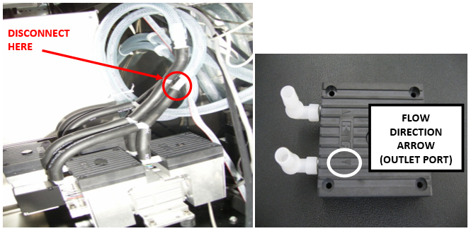
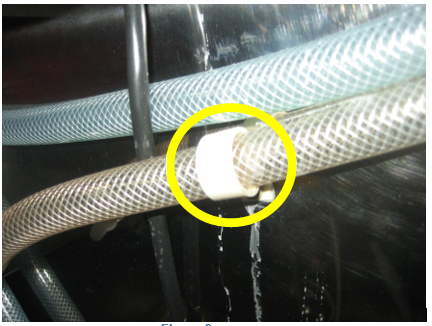
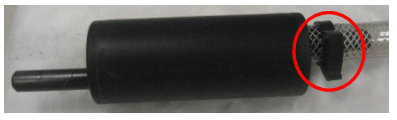
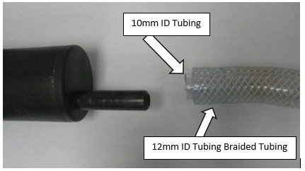
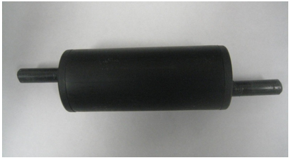
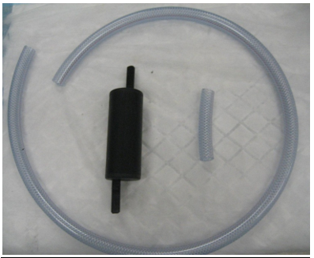
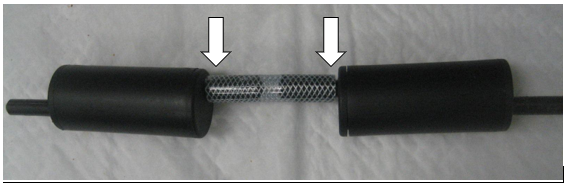
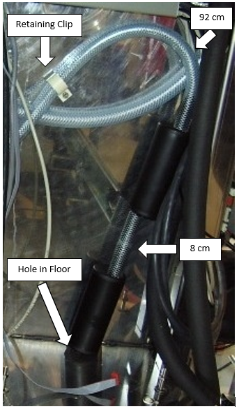
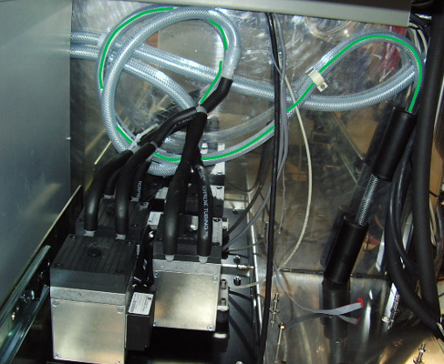
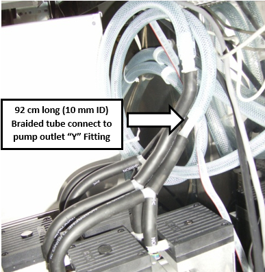

Installation of the Secondary Vacuum Muffler
What is Affected
The modification for the Secondary Vacuum Muffler will facilitate noise reduction caused by the vacuum pump on the Panther System.
Parts and Materials Required
- Proper PPE
- Kit, Vacuum Muffler
- Vacuum Muffler
- 100 cm long, 10 mm Inside Diameter (ID), braided tubing
- Ruler
- Tubing Cutters
Time Required
- 1 Hour
Procedure
Part A: Preparation
- Put on proper PPE.
- Place the supplied 100 cm long braided tubing on a work surface.
- Use the ruler to cut an 8 cm long section of tubing.
- There should now be two pieces of tubing, a 92 cm and 8 cm in length.
Part B: Removal Procedure
- Power down the Panther System.
- Open the Right-Panel door of the Panther System.
- Remove the Cooling Module.
- Unfastened the buckle that retains the vacuum pump module assembly located at the front of the module's base plate.
- Slide the vacuum forward a few inches to facilitate the removal and installation of the outlet tubing.
- Locate the vacuum pump outlet tubing.
- This will be connected by a series of "L" and "Y" fittings and black 10 mm ID tubing to the outlet side of each of the four pump heads as indicated by the flow direction arrow on the top of the heads.
 Disconnect the clear, braided tubing from the "Y" fitting inserted into the short piece of black 10 mm ID tubing from the "Y" fitting as indicated in the picture below.
Disconnect the clear, braided tubing from the "Y" fitting inserted into the short piece of black 10 mm ID tubing from the "Y" fitting as indicated in the picture below.

- Detach the original 12 mm ID braided tubing from the back panel wall retainer clip. The look portion of the clip unsnaps from the straight portion.

- Remove the original muffler and the tubing from the system.
- Remove the original 12 mm ID braided tubing from the original vacuum muffler by removing the black hose clamp and pulling the tubing from the muffler barb.

- Verify that the 10 mm ID thin-walled inner tubing is also removed along with the 12 mm braided tubing from the muffler barb.
- The muffler should now be clear of all tubing remnants. Save the muffler for later use.


Part C: Installation Procedure
- Place the prepared Vacuum Muffler kit by the system.

- Connect the 2 mufflers end to end using the 8 cm (10 mm ID) braided tubing from the Vacuum Muffler Kit.

- Connect the 92 cm long (10 mm ID) braided tubing to either of the exposed muffler barbs. It does not matter which one.
- Insert the opposite, exposed muffler barb into the hole on the systems floor, in the rear right corner (normally blocked by the Cooling Module).
- Stand the dual muffler assembly upright in the right rear corner of the Panther System.
- Route the 92 cm long piece of braided tubing along the rear wall, and secure it with the retaining clip as shown in the image below. Ensure the loop portion of the retaining clip is snapped into the straight position.

- Connect the other end of the 92 cm braided tubing to the vacuum pump outlet's "Y" coupling and route the tubing as illustrated below.

Note—The outlet tubing is positioned behind the inlet tubing in the first picture. 

- Push the vacuum module back into its mounting position and fasten the buckle that secures it in the system.
- Install the Cooling Module.
- Close the right-door panel.
Verification
- Power on the Panther System and PC.
- Log in to the FSE shield.
- Open the Service Software.
- Initialize the Vacuum.
- Activate the Vacuum & Read the Vacuum pressure.
- Verify the vacuum is within specifications.
The vacuum level must read between -203mbar and -270mbar and the vacuum pump speed must read above 1650rpm.
If needed refer to Configuring the Quad Head Vacuum Pump Speed. - Exit Service Software.
- Start Panther Main.
- Check Vacuum in Panther Main.
- Prime Operation of pumping fluid through tubing to ensure proper and consistent fluid delivery (remove air from the tubing, etc.). the system.
- Verify the Vacuum is within Specification:
- Maintains a vacuum level between 6inHg and 8inHg.
- Verify that exhaust is flowing through the rear vent (serial #00281 and higher) or through the routed tubing (serial #00280 and lower).
- Shutdown and restart the Panther System and PC in Customer Mode and return to customer.
 button at the top of the page to send feedback, comments, or change requests.
button at the top of the page to send feedback, comments, or change requests.